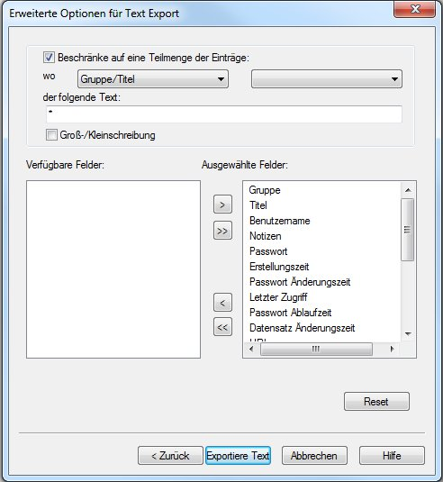

Password Safe unterstützt das Exportieren (und Importieren) der gespeicherten Passwörter in (und von) verschiedenen Formate. Das Exportieren von Daten erreichen Sie im Menü Datei->Exportiere zu. Die unterstützten Formate sind:
Für frühere Versionen von Password Safe wählen Sie einfach das gewünschte Format und definieren Sie den Namen der Passwortdatenbank.
Zusätzlich können Sie auch folgendes machen, um eine Untermenge an Einträge und/oder Gruppen in einer anderen Datenbank zu 'exportieren'. Vorausgesetzt Sie haben mehrere Instanzen erlaubt -siehe hierzu Verwalten->Optionen->System-, starten Sie Password Safe noch mal, und erstellen die neue Datenbank. Die andere Datenbank ist während dessen auch geöffnet. Sie können dann einfach per Drag und Drop jeden Eintrag bzw. Gruppe von der alten in die neue Datenbank 'exportieren'.
Export verwendet ein Wizard Schnittstelle Sie können auch "Erweitertes Feld für Auswahlkriterien" auswählen um die zu exportierende Einträge und dessen Felder einzuschränken. Siehe hier für mehr Information.
Ein Bericht zu den ausgeführten Aktionen steht nach dem Abschluss zur Verfügung. Dieser
Bericht kann dann als Textdatei in die Zwischenablage oder auf Festplatte kopiert werden, im
selben Verzeichnis wie die Datenbank. Mit dem Menüpunkt "Ansicht → Berichte" können die Berichte tu einem späteren
Zeitpunkt angeschaut werden. Der Name des Berichtes ist festgelegt, und hängt ab von der
Funktion mit der er erzeugt wurde. Wenn dieselbe Funktion ausgeführt, und der entsprechende
Bericht auf die Festplatte abgespeichert wird, wird jegliche Bericht zu dieser Funktion
überschrieben.
Hinweis: Der Bericht kann sensible Daten enthalten, so Vorsicht ist
geboten beim Abspeichern auf die Festplatte.
Password Safe unterstützt das Exportieren von Passworteinträgen in Textdateien. Diese
Dateien können dann von anderen Anwendungen verwendet und bearbeitet werden.
Zuerst werden Sie aufgefordert das Master-Passwort als Bestätigung, dass Sie die Datenbank in
eine unverschlüsselte reine Textdatei exportieren möchten, einzugeben. Sie werden ebenfalls
nach dem Namen einer neuen Datei gefragt, und ev. um eine Bestätigung das Überschreiben zu
erlauben, wenn die Datei schon besteht im angegebenen Verzeichnis.
Sie können einige Optionen angeben:
Die Felder der Passworteinträge werden beim Export mit TAB-Zeichen getrennt. Die Felder
sind Gruppe.Titel, Benutzername, Passwort und Notizen. Das Feld Gruppe.Titel wird als ein
Feld betrachtet. Wenn ein Feld Leerzeichen enthält, wird es in Gänsefüßchen gesetzt. Nur
das Feld Notizen kann mehrere Zeilen enthalten. Normalerweise würde man jeden
Zeileneintrag in eine neue Zeile ablegen. Dies macht aber ein Vergleich zwischen mehreren
exportierten Dateien ungleich schwerer. Um dies zu verhindern, kann beim Export für das
Zeilenende ein Trennzeichen definiert werden. Wenn Sie eine solche Datei mit Trennzeichen
wieder importieren (dieses Trennzeichen muss definiert sein) wird es wie eine gesamte
Zeile in die Datenbank erscheinen.
Wenn gewünscht, können Sie ankreuzen, ob Sie alle getrennten Zeilen im Feld Notizen in
einer Zeile ablegen wollen und geben Sie das Trennzeichen an. Weil das gesamte Feld
Notizen in Gänsefüßchen gesetzt wird, wird dieses Zeichen anschließend nicht als
Trennzeichen für Zeilen erkannt.

Nach dem Markieren von "Erweitertes Feld für Auswahlkriterien" wird dieser Assistent geöffnet. Er hilft beim Festlegen der Texte zur Auswahl der Einträge und/oder beim Spezifizieren welche Felder exportiert werden sollen. Siehe hier für mehr Information.
Nach dem Markieren von "Erweitertes Feld für Auswahlkriterien" wird dieser Assistent geöffnet. Er hilft beim Festlegen der Texte zur Auswahl der Einträge und/oder beim Spezifizieren welche Felder exportiert werden sollen. Bemerkung: Das XML Schema setzt Titel und Passwort zwingend voraus. Aus diesem Grund können diese nicht abgewählt werden. Siehe hier für mehr Information
Es ist ebenso möglich einen Eintrag oder eine Gruppe zu exportiern zu Volltext, XML oder zu einer aktuellen Version von Password Safe. In diesem fall, mache einen Rechts-Klick auf den Eintrag bzw. Gruppe, und wähle "Exportiere Eintrag/Gruppe zu" und wähle dann das Ausgabe-Format aus.
Beim Exportieren als Volltext oder XML stehen die selben Optionen wie beim Exportieren der gesamten Datenbank zur Verfügung.
Schließlich ist es möglich wenn ein Filter aktiv ist, nur die Einträge in eine aktuelle Version von Password Safe zu exportieren die den Filterkriterien entsprechen. Dies kann auch gemacht werden mit dem menüpunkt "Exportiere nach" im "Datei" Hauptmenü
Notizen: